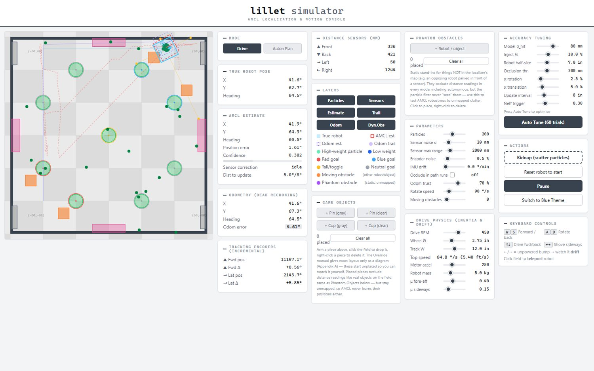
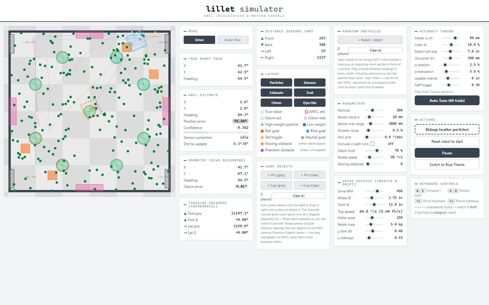
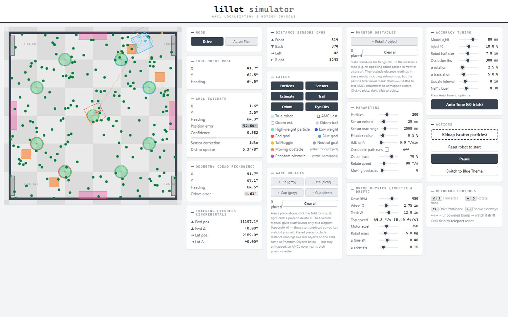
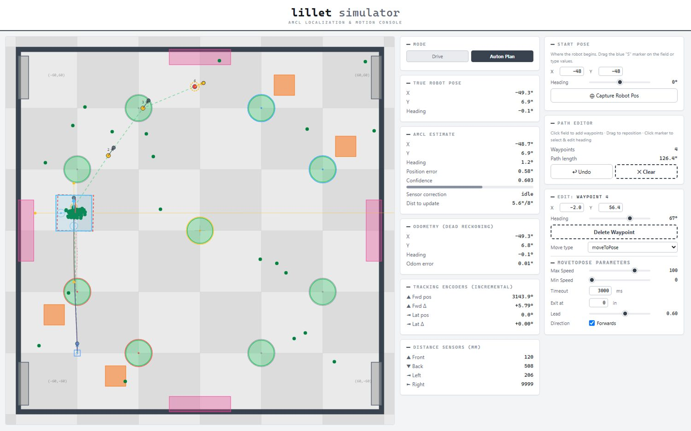
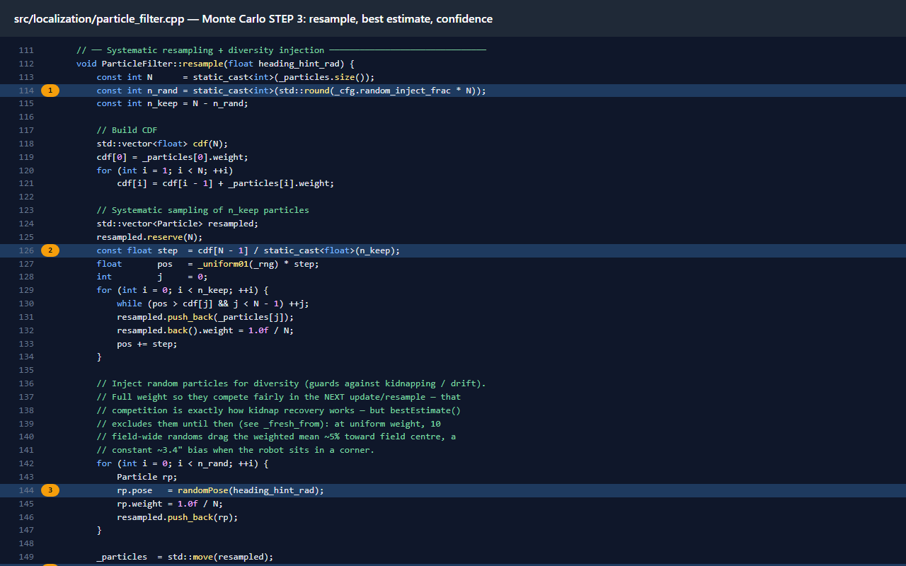

VEX autonomous software
Redbacks localization
A C++ library for team 4613B: odometry fused with distance sensors by a 200-particle Monte Carlo filter, plus a closed-loop motion controller.

VEX robots have no GPS, and wheel encoders drift. lillet is the C++ library I wrote so our robot always knows where it is.
My role
- Wrote the whole library: odometry, particle filter, motion controller.
- Built the browser simulator and the docs site.
- Wired it into the robot's code.
- 200pose guesses tracked
- 20simulator tests passing
- 0.22 inmean error in simulation
- 40 mslocalisation loop
How it works
Three layers, each fixing the last one's weakness.
- Odometry: a tracking wheel and IMU. Fast, but it drifts.
- Distance sensors: four sensors read the field walls. Accurate, but noisy.
- Particle filter: keeps 200 guesses of the robot's pose. Guesses that match the sensors survive. The rest die out.
Watch it work
The simulator lets me test the filter before the robot moves.



Driving with it
- Motion controller: the robot chases a point just ahead of itself, so paths curve smoothly. A locked-sign turn profile stops it spinning back and forth near 180 degrees.
- Autonomous planner: click waypoints in the simulator, then copy them out as robot code.

The code
